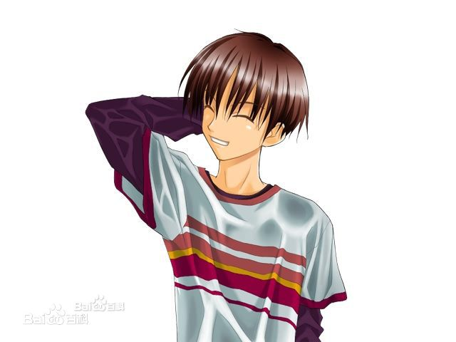
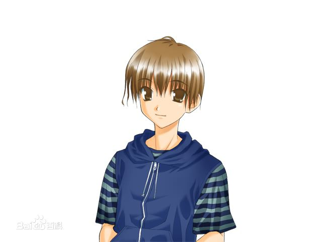

仓成 武/Kuranari Takeshi (CV：保志总一朗）
主人公之一，3年级大学生，20岁。积极的乐观的热血少年，重感情。与朋友一块来到LeMU，但是他不久就与朋友分散了，卷入了这个恐怖的事件。

少年/Shonen (CV：保志总一朗）
主人公之一，年纪大约15岁，丧失记忆中的少年。性格内向，消极，脾气温和。自己的姓名，住所，出生年月都不知道、当然自己的年龄也不记得了。所以为了方便我们称他为“少年”。什么时候、与谁、为了什么、怎么来到LeMU的也都完全不知道。